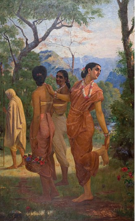
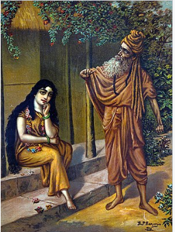

ABOUT US

Shakuntala (Sanskrit: Śakuntalā) is the wife of Dushyanta and the mother of Emperor Bharata. Her story is told in the Adi Parva of the ancient Indian epic Mahabharata and dramatized by many writers, the most famous adaption being Kalidasa's play Abhijñānaśākuntala (The Sign of Shakuntala).
Once, Vishvamitra started to meditate to earn the status of a Brahmarshi. The intensity of his penance frightened Indra. He feared that Vishvamitra might want his throne. To end his penance, Indra sent Menaka, an apsara, to lure him and bring him out of his penance. Menaka reached Vishwamitra's meditating spot and started to seduce him. Vishvamitra could not control his lust and desire and his penance was broken. Vishvamitra and Menaka lived together for a few years and a daughter was born to them. Later, Vishvamitra realized that all those things were Indra's tricks. He realized that he needed to control his emotions. Vishvamitra left Menaka and Menaka left the baby near Rishi Kanva's hermitage before returning to heaven.

Shakuntala spent much time dreaming of her new husband and was often distracted by her daydreams. One day, a powerful rishi, Durvasa, came to the ashrama but, lost in her thoughts about Dushyanta, Shakuntala failed to greet him properly. Incensed by this slight, the rishi cursed Shakuntala, saying that the person she was dreaming of would forget about her altogether. As he departed in a rage, one of Shakuntala's friends quickly explained to him the reason for her friend's distraction. The rishi, realizing that his extreme wrath was not justified, modified his curse saying that the person who had forgotten Shakuntala would remember everything again if she showed him a personal token that had been given to her.